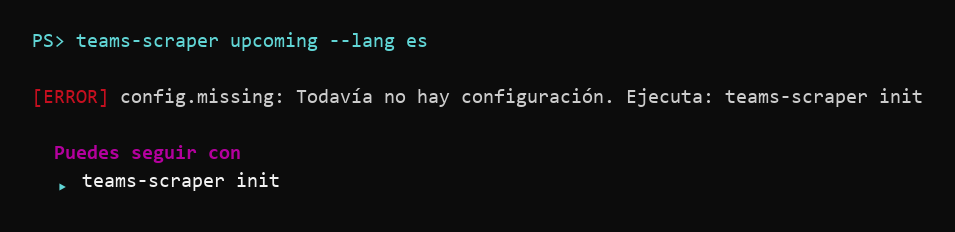

Cuando falla
El código basta para saber qué pasó. No pegues cookies, archivos de sesión ni nombres de otras personas en un issue.
No hay config
La línea es config.missing. Corre teams-scraper init. El programa no inventa una clase ni un navegador.

La frase está en inglés y querías español
El código se queda en inglés a propósito. --lang es cambia la frase de esa corrida. language en la config la cambia para las siguientes.

El navegador no arranca
browser.not_found: la ruta del.exeya no existe.teams-scraper configy elige otro, o pega la ruta.browser.profile_locked: cierra la ventana que ya usa ese perfil y corre el mismo comando.browser.start_failedobrowser.closed: corre otra vez. Si cerraste la ventana a mano, esbrowser.closed.- Extensiones, bloqueadores y escudos de privacidad rompen Teams. Desactívalos en el perfil que abre esta herramienta y recarga.
Pide iniciar sesión
En la terminal, inicia sesión en la ventana y pulsa Enter. Desde Python, con interactive=False, recibes auth.login_required. teams-scraper open deja la ventana abierta para entrar.
Ese perfil empieza sin tu sesión de cada día. Es normal que la primera vez pida la cuenta.
No hay red
network.unreachable significa que teams.microsoft.com en el puerto 443 no respondió. La corrida no sigue con una página a medias.
La clase no aparece
teams.class_missing: name tiene que ser el nombre que muestra Teams. subjects.missing: channels y all necesitan una clase. Márcala con init.
Teams a veces rompe la ñ. Si guardaste el docente en la config, se usa ese nombre cuando la forma rota coincide.
Assignments no carga
teams.timeout o teams.assignments_unavailable: corre el mismo comando. Las tareas se dibujan dentro de un iframe. Una página que no cargó no se guarda como lista vacía. Lo que ya estaba en la base se queda.
teams.card_mismatch no guarda esa tarjeta, porque el título abierto no es el de la lista. teams.sharepoint_unavailable no guarda ese pase de archivos.
El chat no abre
Tiene que estar en la lista de chats. Si no, chats.not_allowed. Si olvidaste --chat, chats.missing. all no lee chats. Hay que correr chats aparte.
La salida es 2
El comando o la bandera no existen. La ayuda sugiere un parecido. teams-scraper --help lista los nombres. Los alias están en Referencia.
Quieres reportarlo
Incluye el navegador, el modo, la versión y el code. Comprueba que sigue pasando en la última versión. Las plantillas del repositorio piden lo mismo.